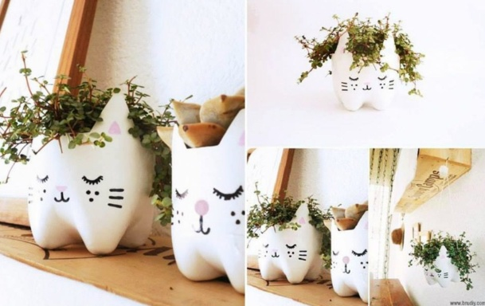
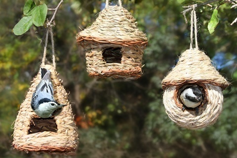
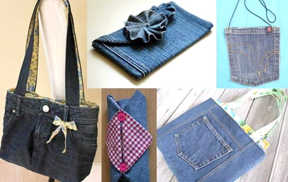
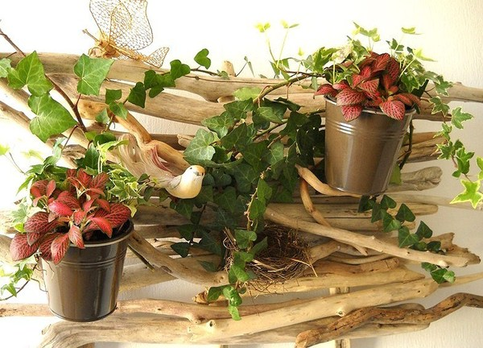

Vous trouverez ici toutes sortes de tutoriaux innovant en rapport avec le recyclage
Découvrez ce que l'on peut faire de joli avec de simples bouteilles en plastique. Plein d'idées pratiques pour recycler et réutiliser ingénieusement vos bouteilles en plastique plutôt que de les jeter.. 
Facile à faire et ludique pour les enfants, découvrez le tutoriel pour fabriquer une mangeoire pour oiseaux à base d'objet recyclé. Un objet utile et pratique à la fois, qui servira d'abri pour manger aux oiseaux pour l'hiver.. 
Comment recycler vos vieux jeans. Ne jetez pas vos jeans usagés, voici quelques idées sympas de recyclage pour transformer et donner une deuxième vie à vos vieux jeans. De belles idées de transformations et de récup pour réaliser de belles créations en jean.. 
Quoi faire avec du bois flotté, voici plusieurs tutos de créations en bois flotté qui vous expliquent comment fabriquer de jolies décorations en bois flotté. De belles idées de récup pour décorer ou fabriquer toutes sortes d'objets avec le bois flotté.. 